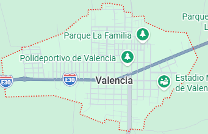

Reseña: Recibe su poético apodo debido a la exuberante belleza de su entorno natural, sus plantaciones ordenadas y el cuidado de sus áreas urbanas. Es un territorio muy rico en producción de banano, palma africana y frutas tropicales.
Urbanas: Valencia, La Unión, Nueva Unión.
Rurales: No posee parroquias rurales legalmente constituidas por el momento (se organiza por sectores y recintos masivos).
Hornado valenciano (con un toque fluminense único), chame frito y la tradicional chicha de maíz.
Balneario San Pablo: Un hermoso río muy concurrido por turistas locales para pasar el día en familia.
Ruta del Banano y la Palma: Recorridos técnicos organizados por las grandes haciendas para mostrar la tecnificación agrícola del cantón.
Hostal El Jardín, Hotel Valencia.
Daniel Macías Castro.

53.000 habitantes.
